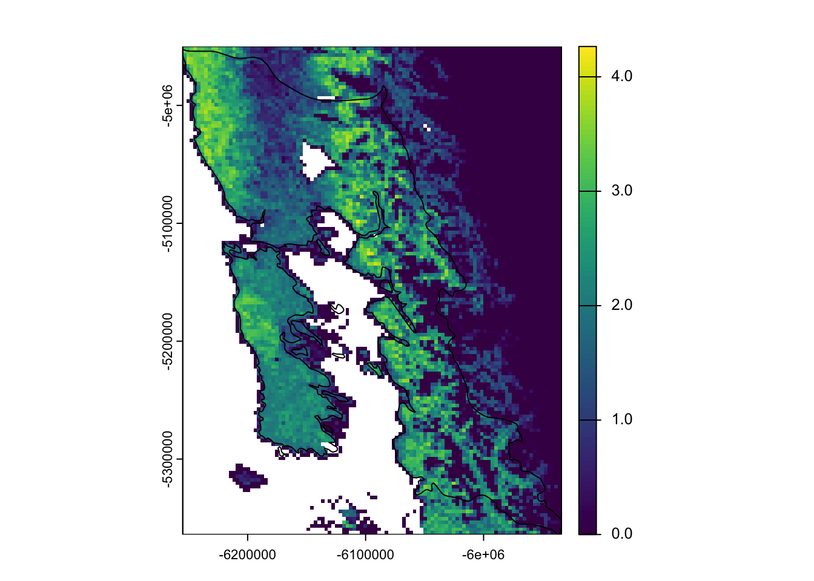

library(dplyr)
library(ebirdst)
library(exactextractr)
library(forcats)
library(ggplot2)
library(readr)
library(sf)
library(stringr)
library(terra)
library(tidyr)4 Productos de Estados y Tendencias de eBird
El proyecto Estados y Tendencias utiliza modelos de machine learning de ciclo anual completo que combinan datos de eBird con datos de teledetección y toman en cuenta las variaciones en el comportamiento y el esfuerzo de los observadores para producir estimaciones semanales de alta resolución de los límites de distribución, la tasa de ocurrencia y la abundancia relativa de las especies de aves. La última versión, con estimaciones hasta el año 2023, incluye resultados para 2981 especies en todo el mundo, de las cuales 471 han sido registradas en Chile. Las visualizaciones interactivas de estas especies están disponibles en el sitio web de eBird Estados y Tendencias y los productos de datos de Estados y Tendencias de eBird están disponibles a través del paquete de R ebirdst.
En este modulo nos familiarizaremos con los productos de datos de Estados y Tendencias de eBird y el paquete R ebirdst, desarrollado específicamente para trabajar con estos datos. Presentaremos la gama de datos disponibles y, a continuación, les mostraremos cómo descargar estos productos de datos y cargarlos en R para su posterior análisis. Luego, trabajaremos con una serie de ejemplos de aplicaciones prácticas. Comencemos cargando los paquetes que utilizaremos a lo largo de este taller.

4.1 Data access
El acceso a los productos de Estados y Tendencias de eBird se obtiene mediante un formulario de solicitud de acceso disponible en: https://ebird.org/st/request. Las condiciones de uso se han diseñado para ser bastante permisivas en muchos casos, especialmente en lo que respecta al uso académico y de investigación. Después de leer las Condiciones de uso de los productos de estado y tendencias de eBird y rellenar el Formulario de solicitud de acceso, se le proporcionará una clave de acceso alfanumérica. Para almacenar la clave de acceso de modo que R y el paquete ebirdst puedan acceder a ella, ejecute lo siguiente (sustituyendo "XXXXXXXXX" por su clave real):
set_ebirdst_access_key("fvlcg6pt15cs", overwrite = TRUE)A continuación, reinicie R inmediatamente. Esto guardará la clave de acceso como variable de entorno EBIRDST_KEY en su archivo .Renviron, de modo que pueda acceder a ella desde su sesión de R.
Checkpoint
Para asegurarte de que tu clave de acceso a los datos funciona, intenta ejecutar el siguiente código, que descargará un único archivo pequeño. Si no funciona, habla con el instructor o envíanos un correo para buscar una solución al problema.
dir.create("data/ebirdst-data", recursive = TRUE, showWarnings = FALSE)
ebirdst_download_status("grbfir1", pattern = "abundance_median_3km", path = "data/ebirdst-data/", force = TRUE)4.2 Especies con Estados y Tendencias
El objeto ebirdst_runs es un data frame que enumera todas las especies disponibles:
glimpse(ebirdst_runs)
#> Rows: 2,981
#> Columns: 30
#> $ species_code <chr> "yebsap-example", "abetow", "absfin1", …
#> $ scientific_name <chr> "Sphyrapicus varius", "Melozone aberti"…
#> $ common_name <chr> "Yellow-bellied Sapsucker", "Abert's To…
#> $ is_resident <lgl> FALSE, TRUE, TRUE, FALSE, TRUE, TRUE, F…
#> $ breeding_quality <chr> "3", NA, NA, "3", NA, NA, "1", NA, NA, …
#> $ breeding_start <date> 2023-05-17, NA, NA, 2023-05-31, NA, NA…
#> $ breeding_end <date> 2023-08-16, NA, NA, 2023-08-02, NA, NA…
#> $ nonbreeding_quality <chr> "3", NA, NA, "3", NA, NA, "1", NA, NA, …
#> $ nonbreeding_start <date> 2023-11-22, NA, NA, 2023-11-22, NA, NA…
#> $ nonbreeding_end <date> 2023-03-08, NA, NA, 2023-02-22, NA, NA…
#> $ postbreeding_migration_quality <chr> "3", NA, NA, "3", NA, NA, "0", NA, NA, …
#> $ postbreeding_migration_start <date> 2023-08-23, NA, NA, 2023-08-09, NA, NA…
#> $ postbreeding_migration_end <date> 2023-11-15, NA, NA, 2023-11-15, NA, NA…
#> $ prebreeding_migration_quality <chr> "3", NA, NA, "3", NA, NA, "0", NA, NA, …
#> $ prebreeding_migration_start <date> 2023-03-15, NA, NA, 2023-03-01, NA, NA…
#> $ prebreeding_migration_end <date> 2023-05-10, NA, NA, 2023-05-24, NA, NA…
#> $ resident_quality <chr> NA, "3", "3", NA, "3", "3", NA, "2", "3…
#> $ resident_start <date> NA, 2023-01-04, 2023-01-04, NA, 2023-0…
#> $ resident_end <date> NA, 2023-12-27, 2023-12-27, NA, 2023-1…
#> $ status_version_year <dbl> 2023, 2023, 2023, 2023, 2023, 2023, 202…
#> $ has_trends <lgl> TRUE, TRUE, FALSE, TRUE, TRUE, FALSE, F…
#> $ trends_season <chr> "breeding", "resident", NA, "breeding",…
#> $ trends_region <chr> "north_america", "north_america", NA, "…
#> $ trends_start_year <dbl> 2012, 2012, NA, 2012, 2011, NA, NA, NA,…
#> $ trends_end_year <dbl> 2022, 2022, NA, 2022, 2021, NA, NA, NA,…
#> $ trends_start_date <chr> "05-24", "01-25", NA, "05-24", "11-01",…
#> $ trends_end_date <chr> "08-16", "05-10", NA, "08-02", "05-03",…
#> $ rsquared <dbl> 0.857, 0.923, NA, 0.857, 0.881, NA, NA,…
#> $ beta0 <dbl> 0.22700, -0.01392, NA, 0.68942, -0.0926…
#> $ trends_version_year <dbl> 2022, 2022, NA, 2022, 2022, NA, NA, NA,…Desde RStudio también puedes utilizar View() para explorar de forma interactiva la base de datos. También puedes consultar la página de especies en Estados y Tendencias para ver la lista completa de especies disponibles. En esta página puedes filtrar por región, por ejemplo, para ver solo aquellas especies con alguna parte de su área de distribución dentro de Chile.
4.2.1 Revisión de expertos
Todas las especies pasan por un proceso de revisión por parte de expertos humanos antes de ser publicadas. El marco de datos «ebirdst_runs» también contiene información de este proceso de revisión. Los revisores evalúan cada una de las cuatro estaciones: reproducción, no reproducción, migración previa a la reproducción y migración posterior a la reproducción. Las especies residentes (es decir, no migratorias) se identifican con el valor «TRUE» en la columna resident column of ebirdst_runs, y estas especies se evalúan a lo largo de todo el año en lugar de por temporadas. «ebirdst_runs» contiene dos datos importantes para cada estación: una calificación de calidad (quality) y fechas estacionales (seasonal dates).
Las seasonal dates definen las semanas que comprenden cada estación; las estimaciones de abundancia relativa para estas semanas se promedian para producir los mapas de abundancia relativa estacional en el sitio de Estados y Tendencias. Las fechas de la temporada reproductiva y no reproductiva se definen para cada especie como las semanas durante esas estaciones en las que la población de la especie no se desplaza. Por esta razón, estas estaciones también se describen como períodos estacionarios. Los períodos de migración se definen como los períodos de movimiento entre las temporadas estacionarias no reproductivas y reproductivas. Cabe señalar que, para muchas especies, estos períodos migratorios incluyen no solo el movimiento desde las zonas de reproducción a las zonas no reproductivas, sino también la dispersión posterior a la reproducción, la migración por muda y otros movimientos.
Los revisores también examinan las estimaciones del modelo para cada temporada con el fin de evaluar el grado de extrapolación u omisión presente en el modelo, y asignan una calificación de calidad asociada que va de 0 (calidad más baja) a 3 (calidad más alta). La extrapolación se refiere a los casos en los que el modelo predice la presencia de una especie cuando se sabe que está ausente, mientras que la omisión se refiere a los casos en los que el modelo no predice la presencia de una especie cuando se sabe que está presente.
Una calificación de 0 implica que esta temporada no ha superado la revisión y que los resultados del modelo no deben utilizarse en absoluto para este período. Las calificaciones de 1 a 3 corresponden a un gradiente de mayor a menor extrapolación y/u omisión, y a menudo utilizamos una analogía con los semáforos para referirnos a ellas:
- Luz roja (1): baja calidad, extrapolación y/u omisión extensas y ruido, pero al menos algunas regiones tienen estimaciones precisas; se puede utilizar con precaución en determinadas regiones.
- Luz amarilla (2): calidad media, cierta extrapolación y/u omisión; utilizar con precaución.
- Luz verde (3): calidad alta, muy poca o ninguna extrapolación y/u omisión; estas temporadas se pueden utilizar con seguridad.
4.3 Descarga de datos
La función ebirdst_download_status() descarga datos de una sola especie a partir del nombre de la especie (nombre común, nombre científico o código de especie). Por ejemplo, para descargar los datos del Picaflor chico, utilice:
path <- ebirdst_download_status(species = "Sephanoides sephaniodes", path = "data/ebirdst-data")
path#> [1] "data/ebirdst-data/2023/grbfir1"La función identificará automáticamente una ubicación adecuada para almacenar los datos descargados y devolverá esa ruta, que hemos capturado en la variable path. Podemos ver qué archivos se han descargado con:
list.files(path, recursive = TRUE)
#> [1] "config.json"
#> [2] "seasonal/grbfir1_abundance_full-year_max_27km_2023.tif"
#> [3] "seasonal/grbfir1_abundance_full-year_max_3km_2023.tif"
#> [4] "seasonal/grbfir1_abundance_full-year_max_9km_2023.tif"
#> [5] "seasonal/grbfir1_abundance_full-year_mean_27km_2023.tif"
#> [6] "seasonal/grbfir1_abundance_full-year_mean_3km_2023.tif"
#> [7] "seasonal/grbfir1_abundance_full-year_mean_9km_2023.tif"
#> [8] "seasonal/grbfir1_abundance_seasonal_max_27km_2023.tif"
#> [9] "seasonal/grbfir1_abundance_seasonal_max_3km_2023.tif"
#> [10] "seasonal/grbfir1_abundance_seasonal_max_9km_2023.tif"
#> [11] "seasonal/grbfir1_abundance_seasonal_mean_27km_2023.tif"
#> [12] "seasonal/grbfir1_abundance_seasonal_mean_3km_2023.tif"
#> [13] "seasonal/grbfir1_abundance_seasonal_mean_9km_2023.tif"
#> [14] "seasonal/grbfir1_proportion-population_seasonal_mean_27km_2023.tif"
#> [15] "seasonal/grbfir1_proportion-population_seasonal_mean_3km_2023.tif"
#> [16] "seasonal/grbfir1_proportion-population_seasonal_mean_9km_2023.tif"
#> [17] "weekly/grbfir1_abundance_lower_27km_2023.tif"
#> [18] "weekly/grbfir1_abundance_lower_3km_2023.tif"
#> [19] "weekly/grbfir1_abundance_lower_9km_2023.tif"
#> [20] "weekly/grbfir1_abundance_median_27km_2023.tif"
#> [21] "weekly/grbfir1_abundance_median_3km_2023.tif"
#> [22] "weekly/grbfir1_abundance_median_9km_2023.tif"
#> [23] "weekly/grbfir1_abundance_upper_27km_2023.tif"
#> [24] "weekly/grbfir1_abundance_upper_3km_2023.tif"
#> [25] "weekly/grbfir1_abundance_upper_9km_2023.tif"
#> [26] "weekly/grbfir1_proportion-population_median_27km_2023.tif"
#> [27] "weekly/grbfir1_proportion-population_median_3km_2023.tif"
#> [28] "weekly/grbfir1_proportion-population_median_9km_2023.tif"Dentro de este directorio de paquetes de datos, los archivos están organizados según la siguiente estructura:
weekly/: un directorio que contiene estimaciones semanales de ocurrencia, conteo, abundancia relativa y proporción de población en una cuadrícula regular en formato GeoTIFF con tres resoluciones. Ver más abajo para obtener más detalles.seasonal/: un directorio que contiene estimaciones estacionales de ocurrencia, conteo, abundancia relativa y proporción de población en una cuadrícula regular en formato GeoTIFF con tres resoluciones. Estas se derivan de los datos ráster semanales correspondientes. Las fechas que definen los límites de cada estación se establecen en función de cada especie por un revisor experto familiarizado con la misma. Estas fechas están disponibles en el marco de datos ebirdst_runs. Solo se incluyen las estaciones que han superado el proceso de revisión por expertos. Ver más abajo para obtener más detalles.ranges/: un directorio que contiene GeoPackages que almacenan polígonos de límites de distribución. Ver más abajo para obtener más detalles.config.json: parámetros específicos de la ejecución, principalmente para uso interno, pero que también contienen parámetros útiles para cartografiar los datos de abundancia.
Tip
Los datos espaciales se dividen en dos grandes categorías: datos ráster y datos vectoriales. Los datos ráster representan los datos espaciales como una cuadrícula regular de celdas con un valor o conjunto de valores asignados a cada una. Los datos vectoriales representan los datos espaciales como puntos, líneas o polígonos discretos. En los productos de datos de eBird Status, los datos ráster se distribuyen como GeoTIFF, mientras que los datos vectoriales se distribuyen como GeoPackages.
Para una especie cuyos datos ya se han descargado, puede utilizar get_species_path("Sephanoides sephaniodes") para identificar la ruta de acceso a los datos.
4.3.1 Descarga de archivos específicos
El paquete completo de datos de cada especie contiene un gran número de archivos, muchos de los cuales pueden ser innecesarios para su aplicación. Puede utilizar el argumento dry_run = TRUE en ebirdst_download() para obtener una lista de los archivos disponibles sin descargarlos.
ebirdst_download_status("Sephanoides sephaniodes", dry_run = TRUE)Una vez identificados los archivos que desea, puede utilizar el argumento pattern para descargar solo esos archivos. Por ejemplo, imaginemos que solo queremos los archivos abundance:
ebirdst_download_status("Sephanoides sephaniodes", pattern = "abundance", path = "data/ebirdst-data/")4.4 Cargando datos en R
En este curso, nos centraremos en los productos de datos ráster, que se pueden cargar en R utilizando la función load_raster() de ebirdst. En R, utilizaremos el paquete terra para trabajar con datos ráster. Los productos de datos ráster se dividen en dos grandes categorías que proporcionan estimaciones semanales y estacionales.
4.4.1 Estimaciones semanales ráster
Los productos básicos de datos ráster son las estimaciones semanales de presencia, conteo, abundancia relativa y proporción de población. Todas las estimaciones son el valor medio esperado para un listado con desplazamiento de eBird de 1 km y 1 hora realizado por un observador experto en el momento óptimo del día y en las condiciones meteorológicas óptimas para observar la especie en cuestión.
- Ocurrencia
occurrence: la probabilidad esperada de encontrar una especie. - Conteo
count: el conteo esperado de una especie, condicionado a su ocurrencia en la ubicación dada. - Abundancia relativa
abundance: la abundancia relativa esperada de una especie, calculada como el producto de la probabilidad de ocurrencia y el conteo condicionado a la ocurrencia. Además de la abundancia relativa mediana, se proporcionan intervalos de confianza (IC) superiores e inferiores, definidos en el decil 10 y el decil 90 de la abundancia relativa, respectivamente. - Proporción de población
proportion-population: la proporción de la abundancia relativa total dentro de cada celda. Se trata de un producto derivado que se calcula dividiendo cada valor de celda de abundancia relativa del ráster por la suma de todos los valores de celda.
Todas las predicciones se realizan en una cuadrícula global estándar de 2,96 km x 2,96 km; sin embargo, también se proporcionan archivos GeoTIFF de menor resolución, que suelen ser mucho más rápidos de manejar. Las tres resoluciones son:
- Alta resolución (
3km): datos con una resolución nativa de 2,96 km. - Resolución media (
9km): datos3kmagregados por un factor de 3 en cada dirección, lo que da como resultado una resolución de 8,89 km. - Baja resolución (
27km): datos3kmagregados por un factor de 9 en cada dirección, lo que da como resultado una resolución de 26,7 km.
Los archivos semanales utilizan la siguiente convención de nomenclatura:
weekly/<species_code>_<product>_<metric>_<resolution>_<year>.tif
donde metric suele ser median, excepto en los IC de abundancia relativa, que utilizan lower y upper. La función load_raster() se utiliza para cargar estos datos en R y toma argumentos para product, metric y resolution. Por ejemplo, para cargar la abundancia relativa mediana de alta resolución, utilice:
abd_median_3km <- load_raster(species = "grbfir1",
path = "data/ebirdst-data/",
product = "abundance",
period = "weekly",
metric = "median",
resolution = "3km")
print(abd_median_3km)
#> class : SpatRaster
#> dimensions : 5562, 11484, 52 (nrow, ncol, nlyr)
#> resolution : 3000, 3000 (x, y)
#> extent : -17226000, 17226000, -8343000, 8343000 (xmin, xmax, ymin, ymax)
#> coord. ref. : WGS 84 / Equal Earth Greenwich (EPSG:8857)
#> source : grbfir1_abundance_median_3km_2023.tif
#> names : 2023-01-04, 2023-01-11, 2023-01-18, 2023-01-25, 2023-02-01, 2023-02-08, ...
#> min values : 0.00, 0.00, 0.00, 0.0, 0.00, 0.00, ...
#> max values : 4.09, 4.97, 4.53, 3.9, 3.76, 4.41, ...A menudo nos referimos a estos objetos ráster como cubos semanales (por ejemplo, el cubo de abundancia semanal). Obsérvese que los cubos contienen 52 capas, que corresponden a las semanas del año. Los nombres de las capas son las fechas asociadas al punto medio de cada semana.
as.Date(names(abd_median_3km))
#> [1] "2023-01-04" "2023-01-11" "2023-01-18" "2023-01-25" "2023-02-01"
#> [6] "2023-02-08" "2023-02-15" "2023-02-22" "2023-03-01" "2023-03-08"
#> [11] "2023-03-15" "2023-03-22" "2023-03-29" "2023-04-05" "2023-04-12"
#> [16] "2023-04-19" "2023-04-26" "2023-05-03" "2023-05-10" "2023-05-17"
#> [21] "2023-05-24" "2023-05-31" "2023-06-07" "2023-06-14" "2023-06-21"
#> [26] "2023-06-28" "2023-07-05" "2023-07-12" "2023-07-19" "2023-07-26"
#> [31] "2023-08-02" "2023-08-09" "2023-08-16" "2023-08-23" "2023-08-30"
#> [36] "2023-09-06" "2023-09-13" "2023-09-20" "2023-09-27" "2023-10-04"
#> [41] "2023-10-11" "2023-10-18" "2023-10-25" "2023-11-01" "2023-11-08"
#> [46] "2023-11-15" "2023-11-22" "2023-11-29" "2023-12-06" "2023-12-13"
#> [51] "2023-12-20" "2023-12-27"Como otro ejemplo, podríamos cargar los intervalos de confianza de abundancia superior e inferior de baja resolución.
abd_lower_27km <- load_raster(species = "grbfir1",
path = "data/ebirdst-data/",
product = "abundance",
metric = "lower",
period = "weekly",
resolution = "27km")
abd_upper_27km <- load_raster(species = "grbfir1",
path = "data/ebirdst-data/",
product = "abundance",
metric = "upper",
period = "weekly",
resolution = "27km")4.4.2 Rásters de estimaciones estacionales
Los rásters de estimaciones estacionales se proporcionan para el mismo conjunto de productos y con las mismas tres resoluciones que las estimaciones semanales. Se obtienen a partir de los datos semanales tomando la media o el máximo por celda a lo largo de las semanas de cada estación. Recuerde que las fechas límite estacionales están disponibles en ebirdst_runs; no se proporcionan datos para las estaciones con una puntuación de calidad de 0.
Los GeoTIFF estacionales utilizan la siguiente convención de nomenclatura:
seasonal/<species_code>_<product>_seasonal_<metric>_<resolution>_<year>.tif
donde metric es mean o max. La función load_raster(period = "seasonal") se utiliza para cargar estos datos en R y toma argumentos para product, metric y resolution. Por ejemplo, para cargar la abundancia relativa estacional media de baja resolución, utilice:
abd_seasonal_mean <- load_raster(species = "grbfir1",
path = "data/ebirdst-data/",
product = "abundance",
period = "seasonal",
metric = "mean",
resolution = "27km")
print(abd_seasonal_mean)
#> class : SpatRaster
#> dimensions : 618, 1276, 4 (nrow, ncol, nlyr)
#> resolution : 27000, 27000 (x, y)
#> extent : -17226000, 17226000, -8343000, 8343000 (xmin, xmax, ymin, ymax)
#> coord. ref. : WGS 84 / Equal Earth Greenwich (EPSG:8857)
#> source : grbfir1_abundance_seasonal_mean_27km_2023.tif
#> names : breeding, nonbreeding, prebree~gration, postbre~gration
#> min values : 0.00, 0.00, 0.00, 0.0
#> max values : 3.28, 4.89, 2.47, 5.3Observe que hay cuatro capas en este ráster que corresponden a las cuatro estaciones.
names(abd_seasonal_mean)
#> [1] "breeding" "nonbreeding" "prebreeding_migration"
#> [4] "postbreeding_migration"Por último, para mayor comodidad, los productos de datos incluyen rásteres anuales que resumen la media o el máximo de todas las semanas que caen dentro de una estación que ha superado el proceso de revisión por expertos. Se puede acceder a ellos de forma similar a los productos estacionales, solo que con «period = “full-year”» en lugar de «period = “week”». Por ejemplo, estas capas se pueden utilizar en la planificación de la conservación para evaluar los sitios más importantes en todo el área de distribución y el ciclo anual completo de una especie.
abd_fy_max <- load_raster(species = "grbfir1",
path = "data/ebirdst-data/",
product = "abundance",
period = "full-year",
metric = "max",
resolution = "3km")4.5 Explorando los datos ráster
Carguemos los ráster de abundancia relativa semanal y estacional de baja resolución y utilicémoslos para demostrar algunas operaciones ráster básicas con los datos.
abd_weekly <- load_raster(species = "grbfir1",
path = "data/ebirdst-data/",
product = "abundance",
resolution = "27km")
abd_seasonal <- load_raster(species = "grbfir1",
path = "data/ebirdst-data/",
product = "abundance",
period = "seasonal",
resolution = "27km")Estos ráster se pueden dividir fácilmente en subconjuntos de una sola semana o temporada.
# week of may 17
abd_weekly[["2023-05-17"]]
#> class : SpatRaster
#> dimensions : 618, 1276, 1 (nrow, ncol, nlyr)
#> resolution : 27000, 27000 (x, y)
#> extent : -17226000, 17226000, -8343000, 8343000 (xmin, xmax, ymin, ymax)
#> coord. ref. : WGS 84 / Equal Earth Greenwich (EPSG:8857)
#> source : grbfir1_abundance_median_27km_2023.tif
#> name : 2023-05-17
#> min value : 0.00
#> max value : 5.49
# breeding season
abd_seasonal[["breeding"]]
#> class : SpatRaster
#> dimensions : 618, 1276, 1 (nrow, ncol, nlyr)
#> resolution : 27000, 27000 (x, y)
#> extent : -17226000, 17226000, -8343000, 8343000 (xmin, xmax, ymin, ymax)
#> coord. ref. : WGS 84 / Equal Earth Greenwich (EPSG:8857)
#> source : grbfir1_abundance_seasonal_mean_27km_2023.tif
#> name : breeding
#> min value : 0.00
#> max value : 3.28También podemos dividir el ráster semanal en un rango de semanas. Por ejemplo, dividamos solo las estimaciones de las semanas de mayo y luego calculemos el promedio de todas las semanas.
# determine qué fechas podemos incluir
week_dates <- as.Date(names(abd_weekly))
start_date <- as.Date("2023-05-01")
end_date <- as.Date("2023-05-31")
week_in_may <- week_dates >= start_date & week_dates <= end_date
# subset a las semanas de mayo
abd_weekly_may <- abd_weekly[[week_in_may]]
# promedio semanal
mean(abd_weekly_may, na.rm = TRUE)
#> class : SpatRaster
#> dimensions : 618, 1276, 1 (nrow, ncol, nlyr)
#> resolution : 27000, 27000 (x, y)
#> extent : -17226000, 17226000, -8343000, 8343000 (xmin, xmax, ymin, ymax)
#> coord. ref. : WGS 84 / Equal Earth Greenwich (EPSG:8857)
#> source(s) : memory
#> name : mean
#> min value : 0.00
#> max value : 5.34Crear un mapa sencillo con los datos producirá resultados inesperados. Por ejemplo, vamos a trazar un mapa de la abundancia relativa durante la temporada de reproducción del Picaflro chico.
plot(abd_seasonal[["breeding"]])
Recuerda que todos los productos de datos de eBird Status se proporcionan para todo el mundo, independientemente del área de distribución de las especies. Además, tenga en cuenta que algunas zonas, como la mayor parte de la cuenca del Amazonas, tienen valores faltantes, lo que indica que no se disponía de datos suficientes para hacer una predicción en la región. Otras zonas, como América del Norte, contaban con datos suficientes para predecir que la especie está ausente. Probemos a utilizar los datos SIG incluidos en el paquete de datos del curso para recortar el ráster a la región de Los Lagos y crear un mapa más significativo.
# Límite de Los Lagos, proyectado para coincidir con los datos ráster.
los_lagos <- read_sf("data/gis-data.gpkg", layer = "ne_states") %>%
filter(state == "Los Lagos") %>%
st_transform(crs = crs(abd_seasonal)) %>%
st_geometry()
# Recortar datos ráster a Chile
abd_breeding_ll <- crop(abd_seasonal[["breeding"]], los_lagos)
# mapear
plot(abd_breeding_ll)
plot(los_lagos, add = TRUE)
Checkpoint
Hagamos una pausa antes de continuar con algunas aplicaciones más realistas de los productos de datos de eBird Status. Asegúrate de que te sientes cómodo cargando los datos en R y realizando algunas de las operaciones básicas.
4.6 Applications
The remainder of the workshop will work through three example applications using the eBird Status data products:
- Trajectories: chart the change in the percent of the population in a region throughout the year for a set of species.
- Regional statistics: calculate the proportion of the breeding population falling within protected areas for a set of species.
- Prioritization: use eBird Status data products to identify important sites for protection of a set of species.
4.6.1 Trajectories
In this application, we’ll look at the change in for populations for two species throughout the year in Los Lagos, Chile. We’ll consider Green-backed Firecrown and Patagonian Tyrant, two migrant species that are nearly endemic to Chile (data for both species are in the workshop data package). When comparing multiple species, or a single species between different seasons, as is the case here, it’s important to consider the proportion of population rather than relative abundance to mitigate the impact of differences in detectability between seasons and speces.
Let’s start by loading the medium resolution weekly proportion of population cubes for these species as well as a boundary polygon for Los Lagos.
# proportion of population cubes
pop_grbfir1 <- load_raster(species = "grbfir1",
path = "data/ebirdst-data/",
product = "proportion-population",
metric = "median",
resolution = "9km")
ebirdst_download_status("Patagonian Tyrant", path = "data/ebirdst-data/")
pop_pattyr2 <- load_raster(species = "pattyr2",
path = "data/ebirdst-data/",
product = "proportion-population",
metric = "median",
resolution = "9km")
# los lagos boundary, projected to match the raster data
los_lagos <- read_sf("data/gis-data.gpkg", "ne_states") %>%
filter(state == "Los Lagos") %>%
st_transform(crs = crs(pop_grbfir1)) %>%
st_geometry()Now, we’ll use the R package exactextractr to calculate the sum of the proportions for each species within Los Lagos.
# sum within los lagos
# firecrown
traj_grbfir1 <- exact_extract(pop_grbfir1, los_lagos, fun = "sum")
traj_grbfir1 <- data.frame(species = "Green-backed Firecrown",
week = as.Date(names(pop_grbfir1)),
prop_pop = as.numeric(traj_grbfir1[1, ]))
# tyrant
traj_pattyr2 <- exact_extract(pop_pattyr2, los_lagos, fun = "sum")
traj_pattyr2 <- data.frame(species = "Patagonian Tyrant",
week = as.Date(names(pop_pattyr2)),
prop_pop = as.numeric(traj_pattyr2[1, ]))
# combine
trajectories <- bind_rows(traj_grbfir1, traj_pattyr2)
head(trajectories)
#> species week prop_pop
#> 1 Green-backed Firecrown 2023-01-04 0.244
#> 2 Green-backed Firecrown 2023-01-11 0.230
#> 3 Green-backed Firecrown 2023-01-18 0.256
#> 4 Green-backed Firecrown 2023-01-25 0.244
#> 5 Green-backed Firecrown 2023-02-01 0.243
#> 6 Green-backed Firecrown 2023-02-08 0.238Finally we can plot the trajectories.
ggplot(trajectories, aes(x = week, y = prop_pop, color = species)) +
geom_line() +
scale_y_continuous(labels = scales::percent) +
labs(x = "Week",
y = "% of population",
title = "Weekly % of population trajectory in Las Lagos",
color = NULL) +
theme(legend.position = "bottom")
4.6.2 Regional statistics
For this application, we calculate the proportion of the population within protected areas in Chile for a set of species. As an example species group, we’ll use a set of 10 species that are endemic or nearly endemic to Chile. For migratory species we’ll focus on the breeding season.
species_list <- c("cthhue1", "chipig2", "chimoc1", "grbfir1", "chutap1",
"pattyr2", "strwoo6", "chifli1", "thtray1", "auspar1")
# download data for this list of species
for (i in 1:length(species_list)){
ebirdst_download_status(species_list[i], path = "data/ebirdst-data/", pattern = "proportion-population_seasonal_mean_9km")
}
# add common names, migrant/resident status, and quality
species_list <- filter(ebirdst_runs, species_code %in% species_list) %>%
mutate(quality = ifelse(is_resident, resident_quality, breeding_quality)) %>%
select(species_code, common_name, is_resident, quality)
print(species_list)
#> # A tibble: 10 × 4
#> species_code common_name is_resident quality
#> <chr> <chr> <lgl> <chr>
#> 1 auspar1 Austral Parakeet TRUE 3
#> 2 chifli1 Chilean Flicker TRUE 3
#> 3 chimoc1 Chilean Mockingbird TRUE 3
#> 4 chipig2 Chilean Pigeon FALSE 3
#> 5 chutap1 Chucao Tapaculo TRUE 3
#> 6 cthhue1 Chestnut-throated Huet-huet TRUE 2
#> # ℹ 4 more rowsWe have two migrants and 8 resident species. Notice that 0 of these species have quality ratings of 1 indicating that caution should be exercised when using the results. For real world use you should examine the relative abundance maps for errors prior to using them for analysis; however, for this example, we’ll use this species list as is. We’ll load and combine the breeding (for migrants) and resident (for residents) percent of population layers for this list of species. Data for all 10 of these species has been included in the workshop data package.
Tip
Relative abundance estimates are impacted by detection rates, which can vary between species. As a results, when comparing eBird Status and Trends data across species, it’s critical to always use the percent of population layers, which have been standardized by dividing each cell value by the total relative abundance across all cells.
# loop over the species list extracting the seasonal percent of population
proportion_population <- list()
for (i in seq_len(nrow(species_list))) {
# load the seasonal cube for this species
this_species <- species_list[i, ]
pop <- load_raster(this_species$species_code,
path = "data/ebirdst-data",
product = "proportion-population",
period = "seasonal",
resolution = "9km")
# subset to the layer we need: breeding or resident
pop <- pop[[ifelse(this_species$is_resident, "resident", "breeding")]]
proportion_population[[this_species$species_code]] <- pop
}
# stack the rasters into a single object
proportion_population <- rast(proportion_population)The GIS data available in the workshop data package contains polygon boundaries for public protected areas in Chile, let’s load them now and project to match the raster layers. For this example, we’ll combine all the protected area polygons together into one feature; however, this analysis could be modified to consider how the distribution of species varies between protected areas.
protected <- read_sf("data/gis-data.gpkg", layer = "protected_areas") %>%
st_combine() %>%
st_transform(crs = crs(proportion_population))Finally, we can use exactextracr to calculate the total percent of population within protected areas for each species.
percent_protected <- exact_extract(proportion_population, protected, fun = "sum")
percent_protected <- as.numeric(percent_protected[1, ])
percent_protected <- data.frame(species_code = species_list$species_code,
common_name = species_list$common_name,
proportion_population = percent_protected) %>%
arrange(desc(proportion_population))
print(percent_protected)
#> species_code common_name proportion_population
#> 1 pattyr2 Patagonian Tyrant 0.24373
#> 2 thtray1 Thorn-tailed Rayadito 0.22052
#> 3 chutap1 Chucao Tapaculo 0.16700
#> 4 auspar1 Austral Parakeet 0.15122
#> 5 grbfir1 Green-backed Firecrown 0.12828
#> 6 chifli1 Chilean Flicker 0.10931
#> 7 strwoo6 Striped Woodpecker 0.09056
#> 8 chipig2 Chilean Pigeon 0.06149
#> 9 cthhue1 Chestnut-throated Huet-huet 0.02409
#> 10 chimoc1 Chilean Mockingbird 0.00794
# plot the data
ggplot(percent_protected) +
aes(x = fct_reorder(common_name, proportion_population),
y = proportion_population) +
geom_col() +
scale_y_continuous(labels = scales::percent) +
labs(x = NULL, y = "Proportion of population in protected areas") +
coord_flip()
4.6.3 Prioritization
For the final application, we’ll perform a multi-species site prioritization exercise, identifying important sites for protecting the set of 10 near-endemic species we identified in the previous application. Let’s start by generating a multi-species importance layer by calculating the mean percent of population across all 10 species. Since we’re focused on identifying sites in Chile, we’ll also crop and mask the importance layer to a boundary of Chile.
# boundary of chile
chile <- read_sf("data/gis-data.gpkg", layer = "ne_states") %>%
filter(country_code == "CL") %>%
st_transform(crs = crs(proportion_population))
# importance: mean percent of population across species
# fill missing values with zeros prior to averaging
importance <- ifel(is.na(proportion_population), 0, proportion_population) %>%
mean(na.rm = TRUE) %>%
# crop and mask importance to focus on chile
crop(chile) %>%
mask(chile)
#>
|---------|---------|---------|---------|
=========================================
|---------|---------|---------|---------|
=========================================
|---------|---------|---------|---------|
=========================================
|---------|---------|---------|---------|
=========================================
|---------|---------|---------|---------|
=========================================
|---------|---------|---------|---------|
=========================================
# plot the square root of importance since the data are right skewed
par(mar = c(0.25, 0.25, 0.25, 0.25))
crs <- "+proj=laea +lat_0=-40 +lon_0=-72"
r_plot <- sqrt(importance) %>%
project(crs, method = "near") %>%
trim()
plot(r_plot, axes = FALSE)
The absolute numbers in this map are challenging to interpret (they’re the mean proportion of the population across the 10 species in each cell). Instead, the values should be interpreted in relative terms, giving the relative importance of each cell for this set of 10 species.
In the previous application, we examined existing public protected areas. For the sake of comparison, let’s imagine we want to identify the most important sites in Chile that cover the same area as the existing protected area network. What proportion of Chile does the current protected area network cover?
# proportion of chile in existing protected area network
area_chile <- sum(st_area(chile))
area_protected <- st_area(protected)
proportion_protected <- as.numeric(area_protected / area_chile)
print(proportion_protected)
#> [1] 0.208So, 20.8% of Chile is covered by the existing network of public protected areas. Let’s identify the top 20.8% most important raster cells from the multi-species importance layer.
# identify the quantile corresponding to the desired protection level
q <- global(importance, fun = quantile,
probs = 1 - proportion_protected, na.rm = TRUE) %>%
as.numeric()
# identify the most importance cells
selected_sites <- as.numeric(importance >= q)Let’s compare maps of the existing protected area network and the sites selected using eBird Status and Trends.
par(mar = c(0.25, 0.25, 0.25, 0.25))
# high importance
r_plot <- project(selected_sites, crs, method = "near") %>%
trim()
protected_proj <- st_transform(protected, crs = crs) %>%
st_geometry()
plot(r_plot, axes = FALSE, legend = FALSE)
# existing
plot(st_simplify(protected_proj),
col = "#00000088", border = NA,
add = TRUE)
The high importance sites we identified are shown in green, while the existing protected area network is overlayed in grey. It appears the existing protected area network is mostly in southern Chile and there is limited overlap with areas of high importance to the 10 near-endemic species we chose to focus on. This is not surprising since the location of existing protected areas was not chosen specifically to protect these 10 species. Let’s quantify what proportion of the population these two regions capture.
# mask the percent of population layers by the selected sites
selected_pp <- proportion_population %>%
crop(selected_sites) %>%
mask(selected_sites, maskvalues = c(0, NA))
# calculate total percent of population within proposed sites
percent_selected <- global(selected_pp, fun = "sum", na.rm = TRUE)
percent_selected <- data.frame(species_code = names(selected_pp),
selected_percent = percent_selected[, 1])
# combine with values for existing network
comparison <- inner_join(percent_protected, percent_selected,
by = "species_code") %>%
rename(existing_network = proportion_population,
prioritized_sites = selected_percent) %>%
pivot_longer(cols = c(existing_network, prioritized_sites),
names_to = "network_type",
values_to = "proportion_population")
ggplot(comparison) +
aes(x = fct_reorder(common_name, proportion_population, .fun = max),
y = proportion_population,
group = network_type,
fill = network_type) +
geom_col(position = "dodge") +
scale_y_continuous(labels = scales::percent) +
scale_fill_brewer(palette = "Set1") +
labs(x = NULL,
y = "Proportion of population in protected areas",
fill = NULL) +
coord_flip() +
theme_linedraw() +
theme(legend.position = "bottom")
So, for the same total area, we could capture a much larger proportion of the populations of these species if we use eBird Status data products for these species in our site prioritization. This example is, of course, overly simplistic. For example, in a real world application, different sites have different costs associated with protection and you would want to account for that during prioritization. For more complex prioritization problems, systematic conservation planning tools like the R package prioritizr can be used effectively with eBird Status data products.